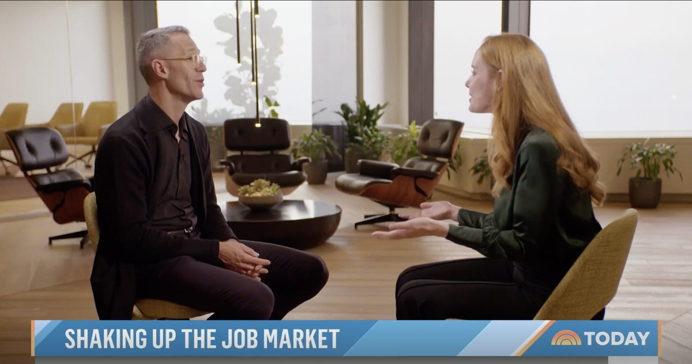

I built my career the way STARs do — and then built for them.
I never finished my degree. For the first decade of my career I built the alternative way — self-taught front-end engineer, designer, product manager, skill by skill, shipped project by shipped project. And through most of that decade, I was afraid to apply for jobs. I knew what happened to a resume without a bachelor’s degree on it: a filter reads it, and a person never does.
So when my role at McKinsey put me in a position to work on that screen itself, it was personal. With our people analytics team, we built tools that help organizations make talent decisions on skills rather than proxies. With clients, we worked on the transition to skills-based hiring directly. And with the Ad Council and 80+ partner organizations, we built the technology behind Tear the Paper Ceiling — the national movement for STARs — workers Skilled Through Alternative Routes: the 70+ million Americans who have the skills for higher-wage work but no bachelor’s degree.
I was one of them. Building technology that helps employers see skills — instead of screening them out — is the through-line of everything I do.

Today Show · 2023Watch the segment — the story of the degree screen, told on national TV.